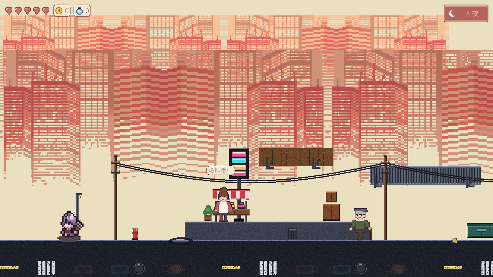

作品柜
每张卡都是一个真实跑在 Godot 4.7 里的工程，点开看细节。
FLAGSHIP · 已完成验收
零件猎魔人
小镇夜间打工实录
十阶段开发计划全数落地：标题到存档的完整闭环，昼夜双循环驱动经营与战斗两套玩法，武器只能用捡来的零件拼装，跨族混搭还会打出副作用。48 个脚本、37 张场景、0 个已知 Bug，最终验收 39 文件全绿。
- 白天摆摊 / 工作台拼装 / NPC 情报 / 图鉴 / 背包
- 夜晚四层横版地图，4 种搞笑怪物专属 AI 与死亡动画
- JSON 全量存档，战斗收益跨昼夜保留
- 程序化合成 BGM 与音效，走路带脚步采样

工程军火库
六个项目背后反复回收使用的弹药，不是玩具代码。
Autoload 单例架构
GameSettings → Inventory → Save → DayNight，依赖单向，换项目直接拔插。
JSON 数据驱动
loot.json / weapon_meta.json 热改数值，策划不动代码就能调平衡。
状态机管线
godot_state_charts 驱动怪物与昼夜阶段，行为可视化不 spaghetti。
批量导入流水线
csv-data-importer + importality，贴图导入设置一键批处理。
AI 结对开发
godot-ai MCP 直连编辑器，场景、脚本、验证在一条 AI 回路里完成。
GDShader 特效
三层视差自动滚动城市、CRT 扫描线滤镜，纯着色器实现。
像素主题系统
StyleBoxFlat 自绘全局 Theme，一套皮肤盖住所有 UI。
存档系统
JSON 序列化背包 / 金币 / 图鉴 / 昼夜进度，读档全量复原。
产线时间轴
2026 年 9 月，三周，从数据内核到技能试验场。
背包二号机：ItemData / Slot / Inventory 三层内核
合成大西瓜字母版：物理堆叠 + 实时单词检测
零件猎魔人十阶段验收通过；Mountain Dusk 着色器城市上线
暗黑like 地牢爬行者推进中，主场景 dungeon.tscn
吸血鬼技能组测试场：数据驱动打击感管线，双套朝向 SpriteFrames
关于工坊主
一个人，一台编辑器，六台游戏机。熟悉 Godot 4.x 全栈：GDScript、TileMap、AnimationPlayer、CanvasLayer UI、着色器、音频总线、存档与数据驱动架构。信条是：Demo 必须能从头玩到尾，组件必须能被下个工程直接抄走。